Всё начинается с семечка
Кофейное «зерно» — на самом деле семечко ягоды, похожей на вишню. Мы выбираем лоты у проверенных ферм Эфиопии, Бразилии и Колумбии: только спелый ручной сбор и оценка от 84 баллов по шкале SCA.
Кофейня у дома / Королёв, ул. Лесная 14А
Зерно шести сортов, выпечка из своей печи и кофе, который действительно кстати. Обжариваем сами — маленькими партиями, с 2019 года.
Мы открылись в 2019 году крошечной точкой «кофе с собой» — один бариста, одна кофемолка и упрямая идея: наливать людям такой кофе, который не хочется разбавлять сахаром. Сейчас у нас своя обжарка, своя печь и команда из четырёх человек, которые помнят ваш заказ со второго визита.
Каждую партию зерна мы обжариваем здесь же, за стеклянной дверью — утром по залу плывёт тот самый запах, из-за которого к нам заходят «просто спросить» и остаются на час.
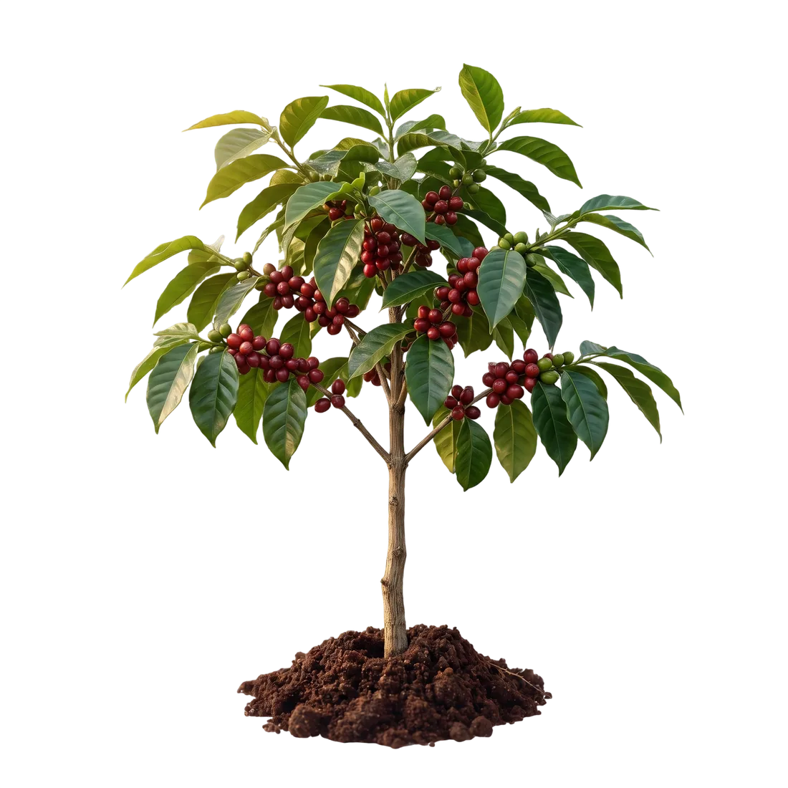
КОФЕЙНЯ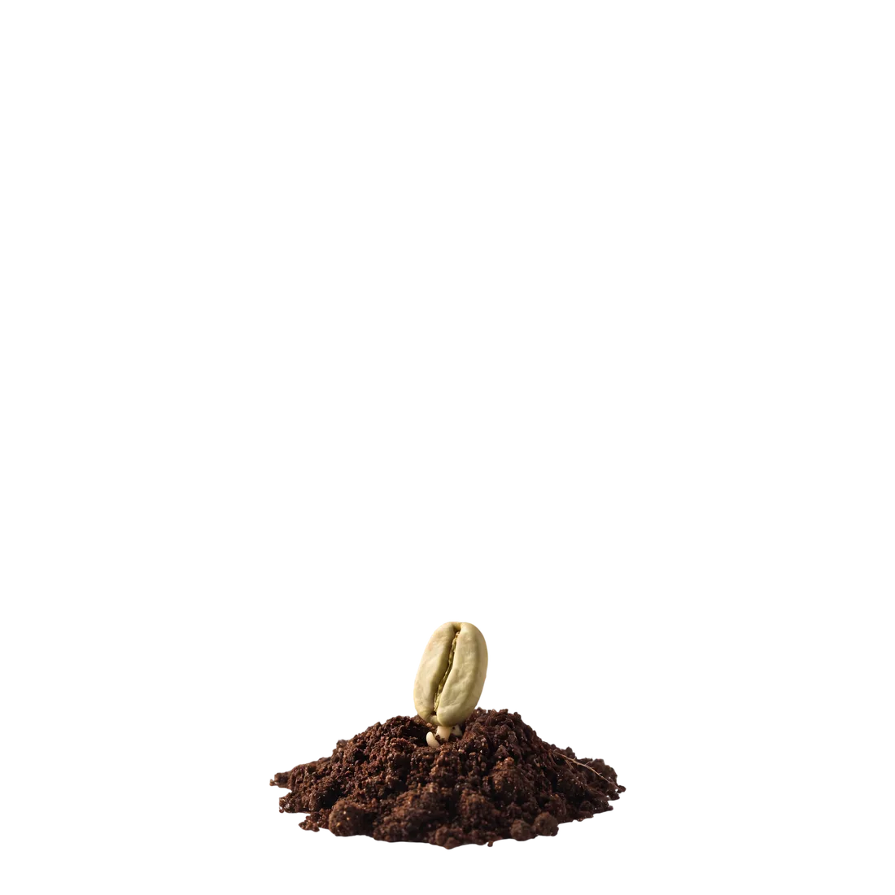
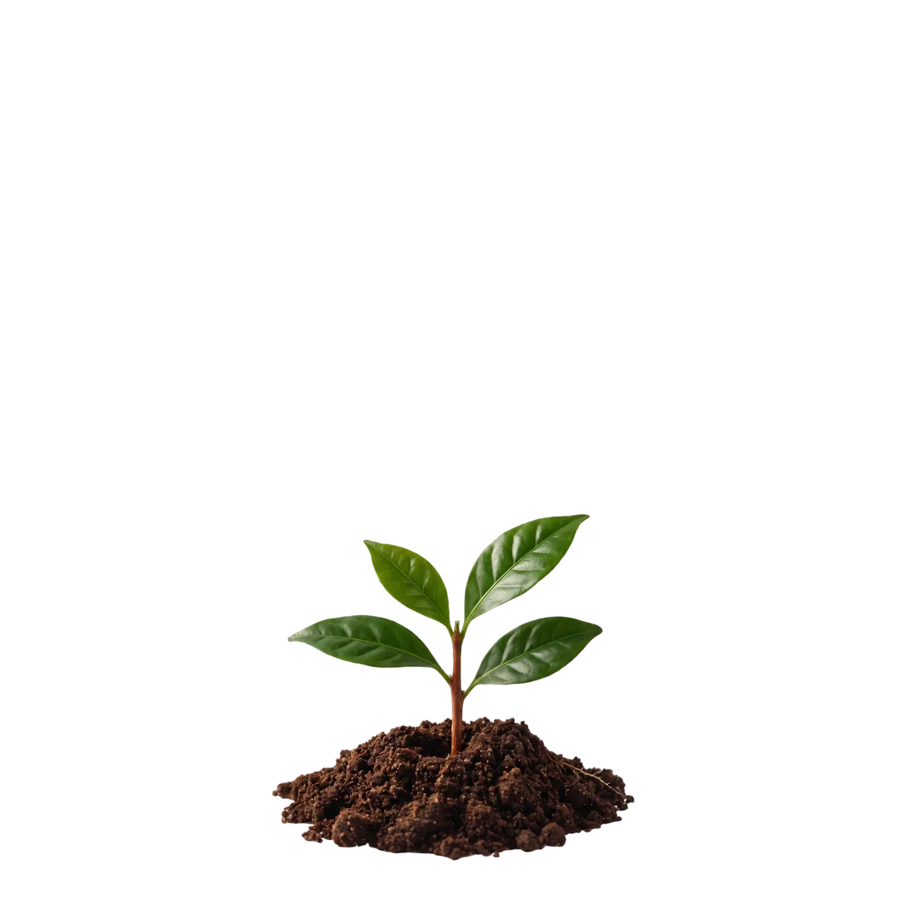
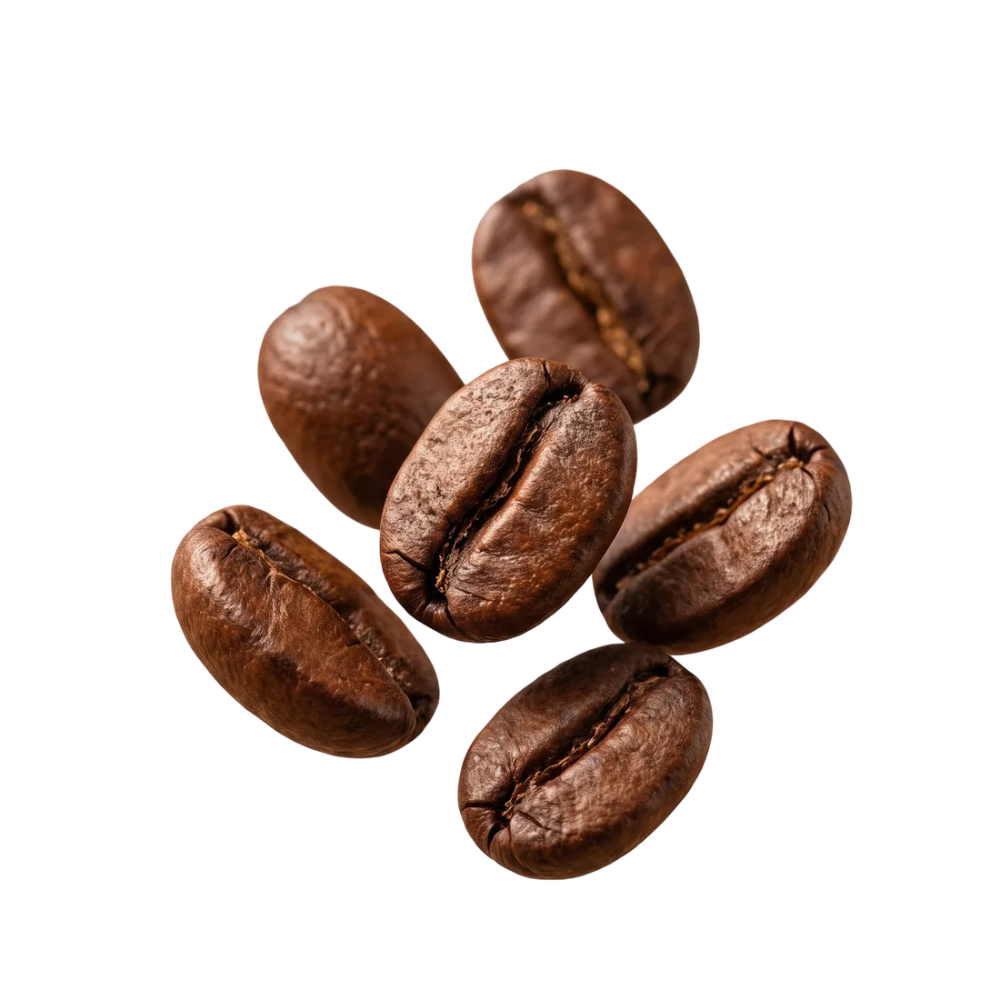
Кофейное «зерно» — на самом деле семечко ягоды, похожей на вишню. Мы выбираем лоты у проверенных ферм Эфиопии, Бразилии и Колумбии: только спелый ручной сбор и оценка от 84 баллов по шкале SCA.
Дерево начинает плодоносить только на 3–4 год. Ягоды собирают вручную, выбирая лишь те, что покраснели полностью. От этого зависит сладость будущей чашки — спелость не обманешь.
Ягоду моют или сушат целиком на «африканских кроватях», потом зерно отдыхает, проходит сортировку и долгую дорогу до ростера. К нам лоты приезжают в джутовых мешках — мы встречаем каждый лично.
Утром партия уходит в ростер: 12 минут, 228°C, первый крак и сброс в охладитель. После обжарки зерно отдыхает 5–10 дней — и попадает в вашу воронку, эспрессо или пачку с собой. Дата обжарки всегда на упаковке.
Каждый лот обжариваем так, чтобы было понятно, откуда он. Листайте — справа ещё пять вкусов.
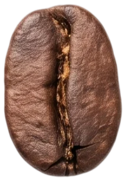
Жасмин, бергамот, спелый персик. Тот самый «чайный» кофе, после которого в эспрессо уже не хочется сахара.
light roast · фильтр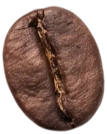
Молочный шоколад, фундук, карамель. Наша база для эспрессо — плотная, сладкая, понятная всем.
medium roast · эспрессо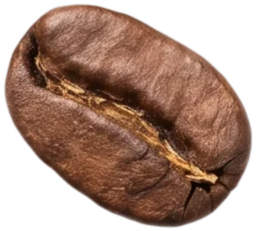
Красное яблоко, карамель, лёгкий ромовый финиш. Идеальна и в воронке, и в капучино.
medium roast · универсал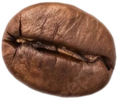
Чёрная смородина, грейпфрут, пряности. Яркая кислотность для тех, кто любит кофе погромче.
light roast · фильтр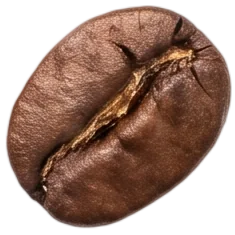
Какао, апельсиновая цедра, специи. Плотное тело и долгий шоколадный финиш — зимний фаворит гостей.
medium-dark · эспрессо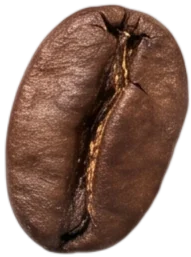
Мёд, абрикос, миндаль. Сладкая и округлая — гостям, которые «не любят кислинку», наливаем именно её.
medium roast · универсал12 минут в ростере. Мы ловим первый крак на слух и сбрасываем партию ровно в тот момент, когда сахар caramelизуется до нужной точки. Дальше зерно отдыхает 5–10 дней и только потом попадает в кофемолку.
«Хороший кофе не нужно описывать. Достаточно налить и помолчать минуту.»— команда «Правильного кофе»
Тёплый свет, свежая обжарка и кофе перед работой. Круассаны уже из печи — берите, пока хрустят.
Капучино, тарталетка и десять минут без уведомлений. Розетки у окна — ваши, вайфай не спрашивает пароля дважды.
Встреча с друзьями, пачка зерна домой и ещё один глоток на дорожку. В субботу в это время — каппинг.
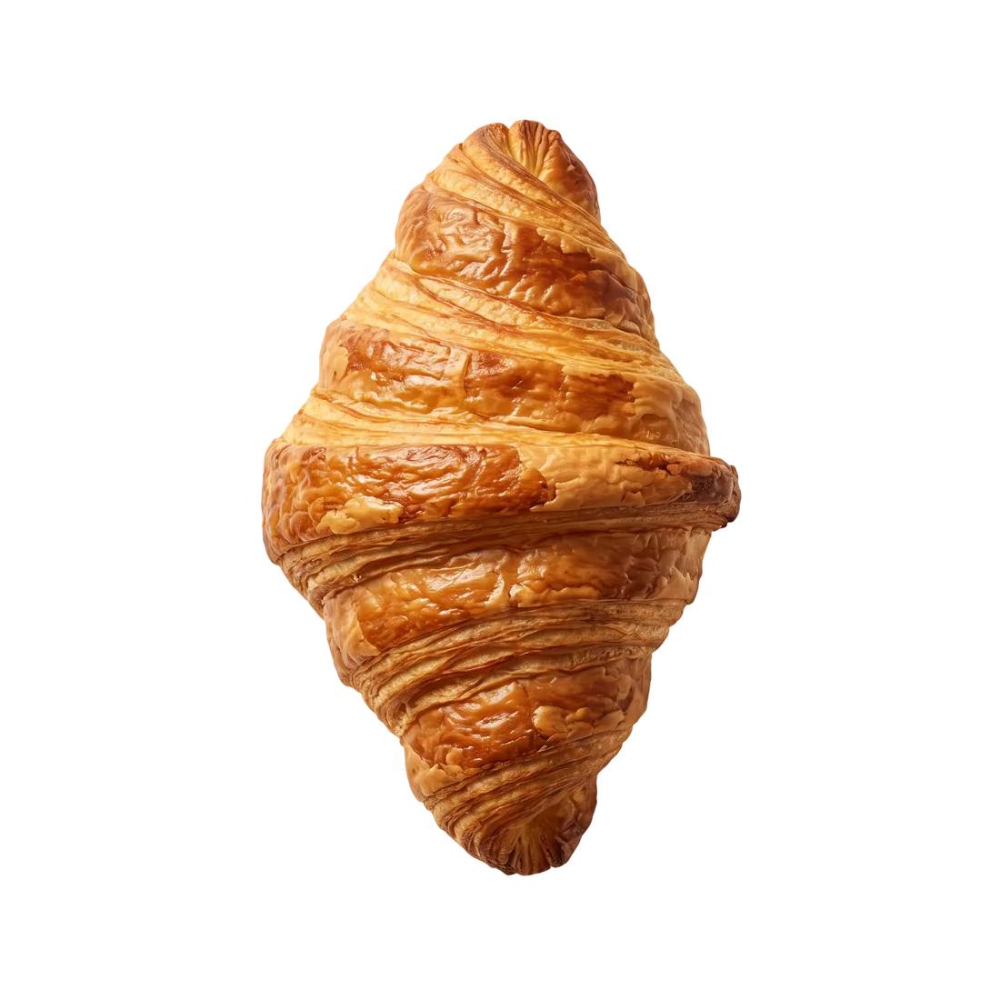
Спросите бариста о сорте недели и способе заваривания — расскажет так, что захочется попробовать все шесть.
Шесть лет за баром и чемпионат по латте-арту в анамнезе. Помнит, кто пьёт флэт уайт на кокосовом, а кто — «как обычно».
Приходит к ростеру раньше всех: около 140 обжарок в месяц. Считает, что идеальный профиль — тот, который гости не замечают, потому что «просто вкусно».
Встаёт в 5 утра, чтобы в 8 круассаны были тёплыми. Тесто — только на закваске, масло — 82,5%, никаких компромиссов.
Начал в 2019-м с точки «кофе с собой» размером в полтора квадратных метра. До сих пор сам стоит за баром по воскресеньям.
Пробуем новые лоты вместе с Максимом: вслепую, с ложками и спорами о вкусах. Запись не нужна — просто приходите.
Два часа с Аней: взбиваем молоко, льём сердце и тюльпан, забираем навык и три своих фото в фартуке.
Фильтр или капучино + круассан из печи по утрам. Лучший способ начать день, если просыпаетесь вы хуже.
Индивидуально или мини-группой: эспрессо, молоко, воронка, гигиена бара. После — сертификат и скидка на зерно.
«Лучший флэт уайт в городе, и это не преувеличение. Захожу каждое утро по пути на работу — уже знают мой заказ наизусть.»
«Взял домой Эфиопию по совету бариста — впервые заварил фильтр сам и понял, о чём они тут все говорят. Жасмин, как обещали.»
«Круассаны как в Париже, честное слово. А ещё здесь спокойно относятся к моему корги — миска с водой появляется сама.»
«Работаю удалённо — пересидела здесь половину проектов. Розетки у окна, вайфай летает, никто не выгоняет за вторую чашку.»
«Пришли на каппинг всей семьёй — ребёнок теперь объясняет друзьям, чем натуралка отличается от мытой. Опасные вы ребята.»
«Прошла обучение бариста у Ани — через месяц открыла свою точку. Прихожу сюда теперь как к старшим товарищам.»
«Заказываем зерно для офиса уже второй год. Привозят свежайшее, дата обжарки — вчерашняя. Коллеги перестали пить растворимый.»
«Тарталетка с малиной — это незаконно вкусно. Прихожу за ней через весь город, и оно того стоит.»
Ростер стоит прямо в зале: видно, как Максим ловит первый крак и сбрасывает партию. Запах утром — часть нашего интерьера.
Всё тесто месим и печём на месте с 5 утра. Никаких замороженных заготовок — круассан живёт один день, и это правильно.
Со второго визита бариста помнит: флэт уайт на кокосовом, двойной, без сахара. Просто говорите «как обычно».
Миска с водой у входа, лакомство за стойкой и ноль осуждающих взглядов. Ваш корги здесь — постоянный гость.
Во дворе дома — шесть гостевых мест и велопарковка у входа. Если всё занято, вдоль Лесной всегда есть свободные места, а от остановки «Юбилейный» до нас три минуты пешком.
Нужно! Мы pet-friendly: для хвостатых у входа стоит миска с водой, а бариста запомнят кличку со второго визита. Единственная просьба — держать поводок коротким в часы пик.
Да. Пачки по 250 г и килограмм, шесть лотов в наличии и четыре ротационных. Помол настроим под воронку, гейзер, турку или эспрессо-машину — бесплатно, при вас. На упаковке всегда дата обжарки.
Всегда держим один лот декафа — швейцарский водяной процесс, без химии. Вкус почти не отличить от обычного: тот же шоколад и карамель, только спать после него можно.
Можно. Вместимость — до 20 человек, формат — от дня рождения до рабочего бранча. Напишите нам в Telegram или позвоните: обсудим дату, меню и кофейную программу.
Королёв, мкр-н Юбилейный,
ул. Лесная, 14А — первый этаж,
вход со двора под козырьком
+7 (915) 189-26-28
Telegram: @pravilny_kofe
ежедневно 08:00 — 22:00
Pet-friendly · Wi-Fi · розетки у окна
Кофе с собой · оплата картой
Обучение бариста — 1 000 ₽